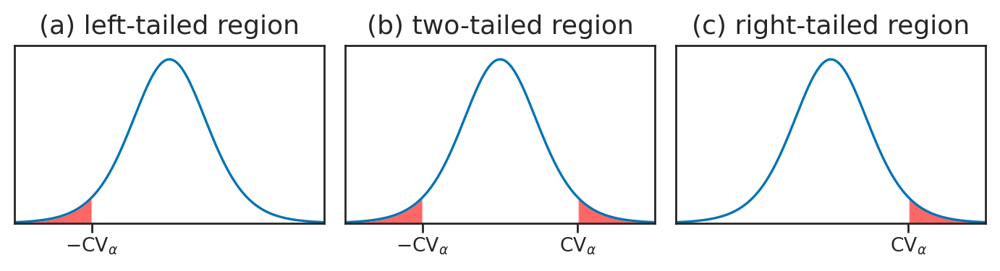

Section 3.5 — Null hypothesis significance testing#
This notebook contains the code examples from Section 3.5 Null hypothesis significance testing of the No Bullshit Guide to Statistics.
Notebook setup#
# load Python modules
import os
import numpy as np
import pandas as pd
import seaborn as sns
import matplotlib.pyplot as plt
# Plot helper functions
from plot_helpers import plot_pdf
from plot_helpers import savefigure
# Figures setup
plt.clf() # needed otherwise `sns.set_theme` doesn't work
from plot_helpers import RCPARAMS
RCPARAMS.update({'figure.figsize': (10, 3)}) # good for screen
# RCPARAMS.update({'figure.figsize': (5, 1.6)}) # good for print
sns.set_theme(
context="paper",
style="whitegrid",
palette="colorblind",
rc=RCPARAMS,
)
# Useful colors
snspal = sns.color_palette()
blue, orange, purple = snspal[0], snspal[1], snspal[4]
# High-resolution please
%config InlineBackend.figure_format = 'retina'
# Where to store figures
DESTDIR = "figures/stats/NHST"
<Figure size 640x480 with 0 Axes>
# set random seed for repeatability
np.random.seed(42)
#######################################################
Definitions#
Hypothesis testing as a decision rule#
NHST procedure#
Example 1: detect kombuncha volume deviation from theory#
Example 3: comparison of East vs. West electricity prices#
Explanations#
Probability models for NHST#
Unique value proposition of NHST#
One-sided and two-sided rejection regions#
filename = os.path.join(DESTDIR, "panel_rejection_regions_left_twotailed_right.pdf")
from scipy.stats import t as tdist
rvT = tdist(9)
xs = np.linspace(-4, 4, 1000)
ys = rvT.pdf(xs)
with plt.rc_context({"figure.figsize":(7,2)}), sns.axes_style("ticks"):
fig, (ax1, ax2, ax3) = plt.subplots(1,3)
# LEFT
title = '(a) left-tailed region'
ax1.set_title(title, fontsize=13) #, y=-0.26)
sns.lineplot(x=xs, y=ys, ax=ax1)
ax1.set_xlim(-4, 4)
ax1.set_ylim(0, 0.42)
ax1.set_xticks([-2])
ax1.set_xticklabels([])
ax1.set_yticks([])
# highlight the left tail
mask = (xs < -2)
ax1.fill_between(xs[mask], y1=ys[mask], alpha=0.6, facecolor="red")
ax1.text(-2, -0.03, r"$-\mathrm{CV}_{\alpha}$", verticalalignment="top", horizontalalignment="center")
# TWO-TAILED
title = '(b) two-tailed region'
ax2.set_title(title, fontsize=13)#, y=-0.26)
sns.lineplot(x=xs, y=ys, ax=ax2)
ax2.set_xlim(-4, 4)
ax2.set_ylim(0, 0.42)
ax2.set_xticks([-2,2])
ax2.set_xticklabels([])
ax2.set_yticks([])
# highlight the left and right tails
mask = (xs < -2)
ax2.fill_between(xs[mask], y1=ys[mask], alpha=0.6, facecolor="red")
ax2.text(-2, -0.03, r"$-\mathrm{CV}_{\alpha}$", verticalalignment="top", horizontalalignment="center")
mask = (xs > 2)
ax2.fill_between(xs[mask], y1=ys[mask], alpha=0.6, facecolor="red")
ax2.text(2, -0.03, r"$\mathrm{CV}_{\alpha}$", verticalalignment="top", horizontalalignment="center")
# RIGHT
title = '(c) right-tailed region'
ax3.set_title(title, fontsize=13)#, y=-0.26)
sns.lineplot(x=xs, y=ys, ax=ax3)
ax3.set_xlim(-4, 4)
ax3.set_ylim(0, 0.42)
ax3.set_xticks([2])
ax3.set_xticklabels([])
ax3.set_yticks([])
# highlight the right tail
mask = (xs > 2)
ax3.fill_between(xs[mask], y1=ys[mask], alpha=0.6, facecolor="red")
ax3.text(2, -0.03, r"$\mathrm{CV}_{\alpha}$", verticalalignment="top", horizontalalignment="center")
savefigure(fig, filename)
Saved figure to figures/stats/NHST/panel_rejection_regions_left_twotailed_right.pdf
Saved figure to figures/stats/NHST/panel_rejection_regions_left_twotailed_right.png
